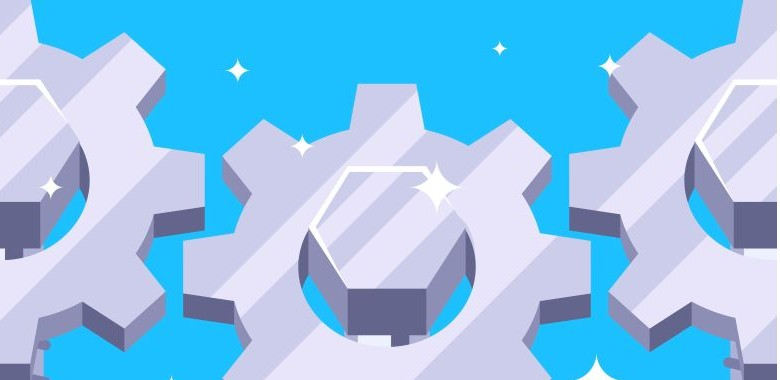
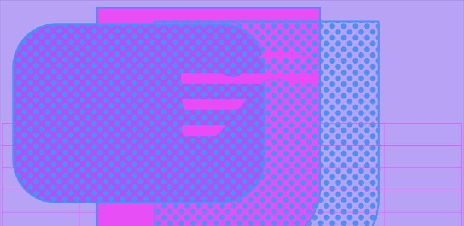
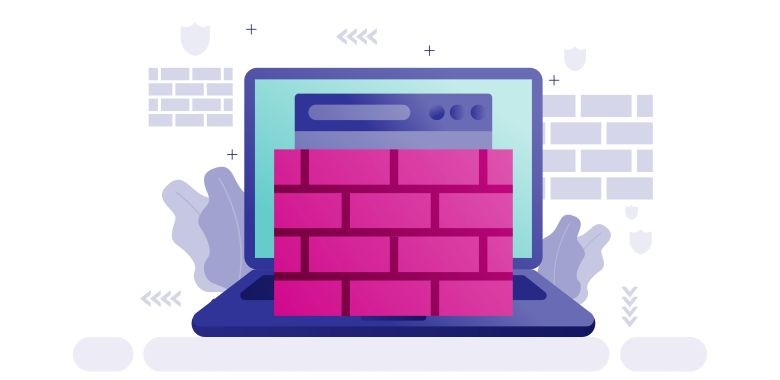

A TècnicSistemes oferim una àmplia gamma de solucions IT adaptades a les necessitats dels nostres clients. Des de la implementació de sistemes de gestió empresarial fins al desenvolupament d'aplicacions personalitzades, el nostre equip està preparat per afrontar qualsevol desafiament tecnològic.
Desenvolupem solucions a mida per a empreses, incloent-hi sistemes de gestió empresarial (ERP), programari de comptabilitat i aplicacions personalitzades. El nostre objectiu és optimitzar els processos empresarials i millorar l'eficiència operativa.
Oferim consultoria per identificar les necessitats específiques de cada empresa i dissenyar solucions que s'adaptin als seus requeriments. El nostre equip d'experts treballa en estreta col·laboració amb els clients per garantir que les solucions implementades siguin efectives i escalables.
Oferim suport tècnic integral per a empreses i particulars, assegurant que els seus sistemes funcionin de manera òptima. El nostre equip està disponible per resoldre qualsevol incidència tècnica, realitzar manteniments preventius i oferir assessorament en la gestió d'infraestructures IT.
Ens especialitzem en la resolució de problemes de maquinari i programari, així com en la implementació de mesures de seguretat per protegir les dades i sistemes dels nostres clients.

Si tens alguna pregunta o necessites assessorament, no dubtis a contactar-nos. Estem aquí per ajudar-te en tot el que estigui relacionat amb les solucions IT.
Contacta'ns:

El nostre servei de Bossa d'Hores et permet adquirir un paquet d'hores de serveis professionals i utilitzar-les de manera flexible i autogestionada. Pots triar entre diferents paquets d'hores i utilitzar-les per sol·licitar serveis mixts, segons les teves necessitats i prioritats.
Beneficis:
Com funciona?
Oferim suport tècnic integral per a empreses i particulars, assegurant que els seus sistemes funcionin de manera òptima. El nostre equip està disponible per resoldre qualsevol incidència tècnica, realitzar manteniments preventius i oferir assessorament en la gestió d'infraestructures IT.
Ens especialitzem en la resolució de problemes de maquinari i programari, així com en la implementació de mesures de seguretat per protegir les dades i sistemes dels nostres clients.
Beneficis:
Com funciona?
